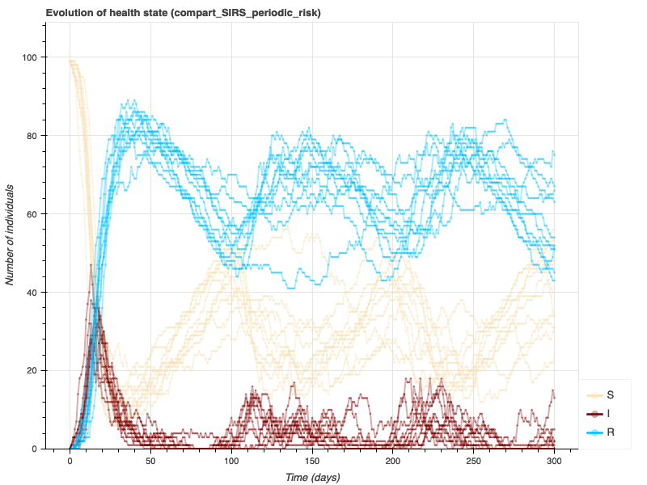
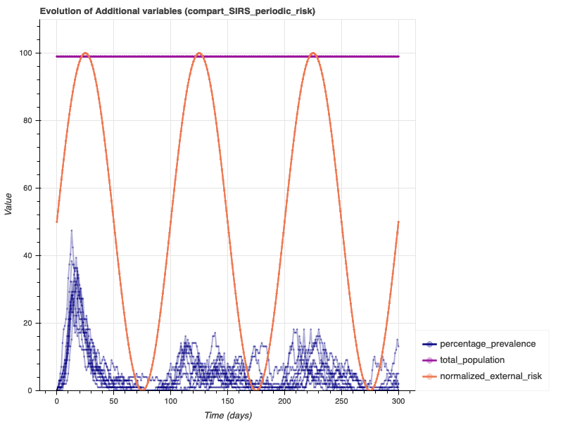
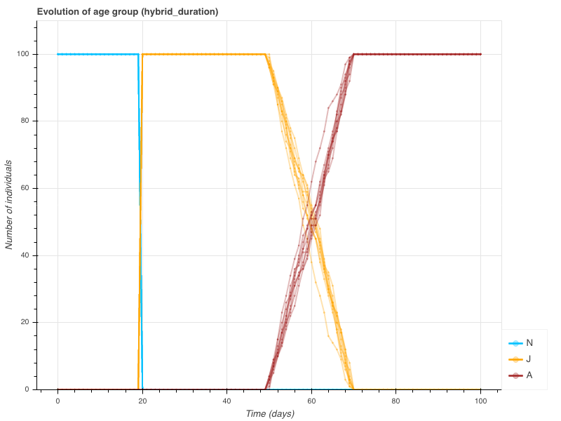
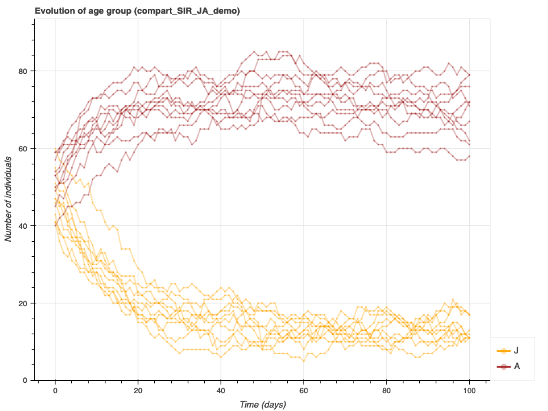
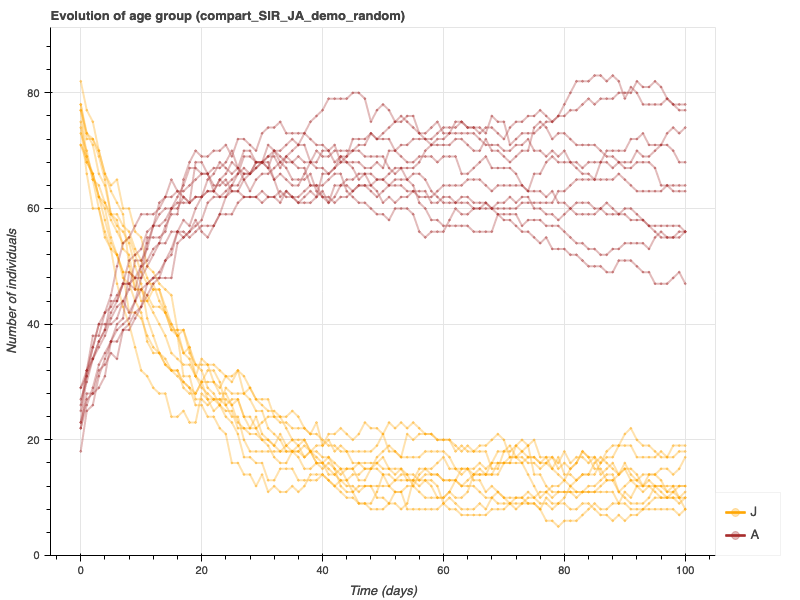
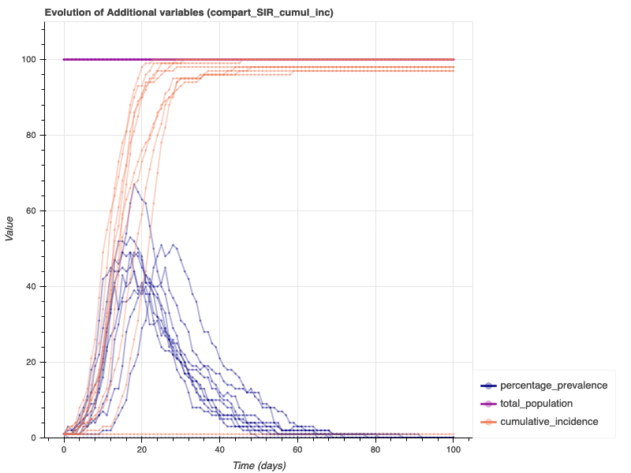
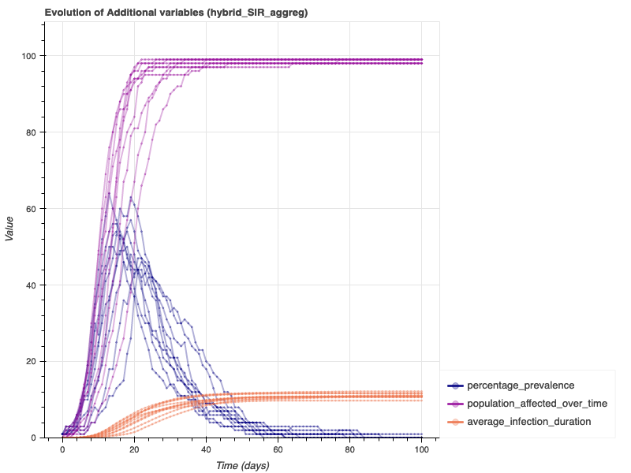
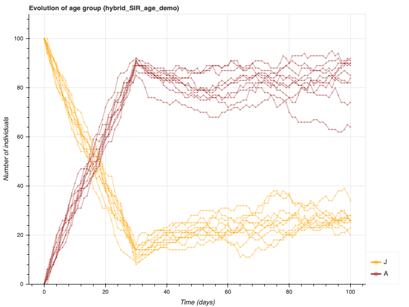
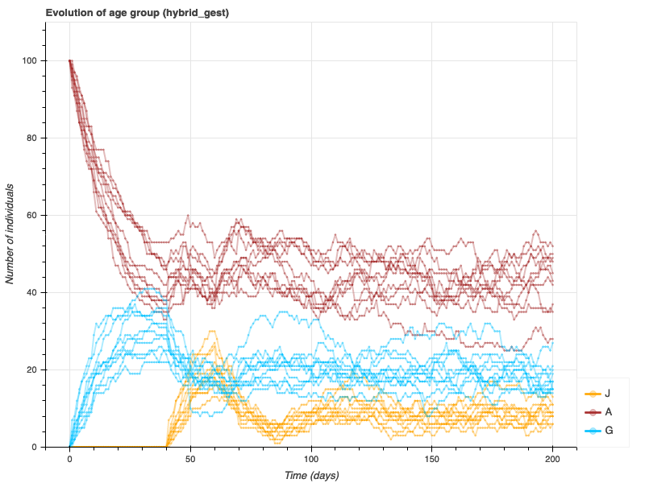
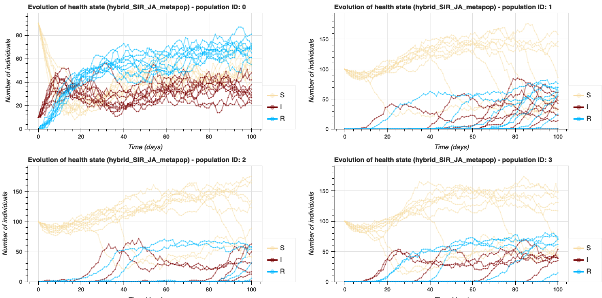

7. Feature examples¶
Directory models/features provides a collection of EMULSION models
which demonstrate EMULSION features in their simplest usage.
7.1. SIR model¶
Files
- compartment-based: compart_SIR.yaml
- individual-based: IBM_SIR.yaml
- hybrid model: hybrid_SIR.yaml
Move cursor over diagram states and transitions to see the tooltip
Note
Variables total_I and total_population used in force of infection
(see tooltip when moving your mouse above force_of_infection in
the diagram above) are computed automatically because of the
existence of a level population and a state I.
7.2. SEIRS model¶
Differences with previous model (SIR):
state_machines:
health_state:
states:
...
- E:
name: 'Latent'
desc: 'infected but not yet able to transmit the disease'
fillcolor: 'orange'
transitions:
- {from: S, to: E, rate: 'force_of_infection'}
- {from: E, to: I, rate: '1/incubation'}
- {from: I, to: R, rate: 'recovery'}
- {from: R, to: S, rate: 'waning'}
...
parameters:
...
incubation:
desc: 'mean duration of latent state (days, assuming exponential
distribution of durations in the state)'
value: 5
waning:
desc: 'rate at which individuals lose immunity (/day)'
value: 0.05
'prevalence (%)':
desc: 'proportion of infected+infectious individuals'
value: '100 * (total_I + total_E) / total_population'
7.3. SIRS model with periodic external risk¶
 {kind=link}
{kind=link}
Note
this model is initialized with a healthy population only
external risk is modelled through a periodic forcing variable:
transmission_I * (1 + sin(time * 2 * pi / external_risk_period))
where
timerepresents the time elapsed since the beginning of simulation (in time units - here days)
See also
7.4. Custom state durations¶
{kind=link}
state_machines:
health_state:
states:
- N:
name: 'Newborn'
duration: 'juvenile_age'
- J:
name: 'Juvenile'
duration: 'adult_age - juvenile_age'
...
parameters:
juvenile_age:
value: 20
adult_age:
value: 'random_uniform(50, 70)'
Note
- Duration in
Nis constant (20 days) - Duration in
Jdepends on a distribution (parameteradult_age), hence each individual gets a duration based on a random sample - Transitions use
proba: 1to ensure that all individuals that have spent the required duration in their state move to the next one. - On state machine diagrams, a clock appears next to the state name when a duration is explicitly specified.
See also
7.5. SIR model with basic demography (births/deaths)¶
state_machines:
health_state:
states:
...
- D:
name: 'Dead'
desc: 'compartment to put dead individuals'
fillcolor: white
autoremove: yes
transitions:
...
- {from: S, to: D, rate: death}
- {from: I, to: D, rate: death}
- {from: R, to: D, rate: death}
productions:
- {from: S, to: S, rate: birth, prototype: newborn}
- {from: I, to: S, rate: birth, prototype: newborn}
- {from: R, to: S, rate: birth, prototype: newborn}
...
parameters:
juvenile_age:
value: 20
adult_age:
value: 'random_uniform(50, 70)'
Note
- State
Dwithautoremove: yesrepresents the state of deceased individuals: all individuals sent toDare automatically removed from simulation. On the state machine diagram, this state appears as a dotted box. - Section
productionsinstate_machines: production links specify from which state groups new individuals are produced and which prototype describes the new individuals. Here for instance all health states are able to producenewbornindividuals. On the diagram, productions links appear as dashed arrows.
See also
7.6. SIR model with age groups¶
{kind=link}
Note
- Two state machines and corresponding groupings/processes are
defined: one for the progression of infection (
health_state), the other for the maturation of individuals and demography (age_group). - State
Swith propertydefault: yes(hence, in bold on the diagram) allows to use keyworddefaultas value forhealth_statein the prototype fornewbornindividuals. If the health state of new individuals has to be revised in further evolutions of the model, the corresponding state has to be labelled asdefaultto replaceS. - The prototypes now initialize the values for both state
machines. Especially, for prototypes used in initial conditions,
age groups are set to
random, which means an equiprobable choice between states of state machineage_group(except autoremove states).
See also
7.7. SIR model with age groups and random initialization¶
{kind=link}
Note
Prototypes
healthyandinfecteddefine theage_groupusing a multinomial sampling between possible states (JandA), to ensure a given proportion of juveniles among healthy individuals in average:prototypes: individuals: - healthy: desc: 'healthy individuals' health_state: S age_group: 'random(init_prop_juveniles, 1-init_prop_juveniles)'
Similarly, initial conditions use a multinomial sampling between two prototypes (
healthyandinfected) to make the initial prevalence vary stochastically according to the initial probability of being infected (initial_proba_infection):initial_conditions: population: - prototype: [infected, healthy] # two possible prototypes for individual initially in the population amount: initial_population_size # drawn among a population of size initial_population_size proba: [initial_proba_infection, 1-initial_proba_infection] # with respective probabilities initial_proba_infection and # 1-initial_proba_infection
7.8. SIR model with age groups and data-based prototypes¶
Warning
This feature is still experimental and likely to evolve in further versions.
Files
{kind=link}
{kind=link}
{kind=link}
{kind=link}
In above figures, 50 stochastic repetitions with data-based population
sizes are run. The metapopulation contains 4 populations, which size
is defined in data/population_size.csv. Each population is
composed of individuals defined in data/initial_individuals.csv.
Note
Prototype
initial_individualsis actually a collection defined in CSV filedata/initial_individuals.csv: each time this prototype is used (here, in initial conditions), a concrete prototype is sampled randomly among those defined in the CSV file:health_state,age_group,weight,desc S,J,10,"healthy juvenile individuals" I,J,40,"infected juvenile individuals" S,A,90,"healthy adult individuals" I,A,10,"infected adult individuals"
Similarly, prototype
data_based_populationis a collection defined in a CSV filedata/population_size.csvas follows:prototype_name,initial_population_size,proportion,desc huge_pop,500,.05,"a huge population" large_pop,100,.35,"a large population" medium_pop,50,.5,"a medium population" small_pop,10,.1,"a small population"
7.9. SIR model with cumulative incidence¶
{kind=link}
- I:
name: 'Infectious'
desc: 'infected and able to transmit the disease'
fillcolor: 'maroon'
on_enter:
- record_change: cumulative_incidence
Note
Cumulative incidence is obtained through the built-in action
record_change executed when entering infecious state. This
action adds the number of individuals currently executing the action
to a variable, here cumulative_incidence.
See also
7.10. SIR model with individual actions and variable aggregation¶
{kind=link}
levels:
population:
desc: 'level of the population'
aggregation_type: 'hybrid'
contains:
- individuals
aggregate_vars:
- name: population_affected_over_time
collect: nb_episodes
operator: 'sum'
- name: average_infection_duration
collect: duration_infected
operator: 'mean'
...
- I:
name: 'Infectious'
...
on_enter:
- set_var: nb_episodes
value: 1
- message: 'I have a bad feeling about this...'
on_stay:
- set_var: duration_infected
value: 'duration_infected + 1'
...
prototypes:
individuals:
- healthy:
desc: 'healthy individuals'
health_state: S
nb_episodes: 0
duration_infected: 0
Note
- On state machine diagrams, black lozenges (left to, below or right to the state name) mark the specification of actions (respectively on enter, on stay and on exit).
- Look at messages in the terminal (beware, printing messages increases computation time!)
- Variables at population scale are created by aggregating variables at individual scale, which are updated in the convenient states.
See also
7.11. SIR model with age groups and explicit age¶
{kind=link}
state_machines:
age_group:
- J:
...
on_stay:
- set_var: age
value: 'age + delta_t'
- A:
...
on_stay:
- set_var: age
value: 'age + delta_t'
...
transitions:
- from: J
to: A
cond: 'age >= adult_age'
proba: 1
...
grouping:
population:
details: [age_group, health_state]
...
parameters:
...
init_age_distrib:
desc: 'distribution of initial ages'
value: 'random_integers(0, adult_age-1)'
...
prototypes:
individuals:
- healthy:
desc: 'healthy individuals'
health_state: S
age_group: J
age: init_age_distrib
...
statevars:
age:
desc: 'age of the individual'
Note
- the individual variable
ageis sampled in a distribution, and incremented while individuals are in statesJandA. Incrementation of age is based on built-in valuedelta_tto ensure consistency whatever the simulation time step condin transition from J to A: since ages are initially distributed randomly within the limits of J group, becoming adult does not rely on a duration but on an explicit verification of age. (An alternative would be to define a duration in J as the difference between adult age and individual age.)statevarssection to declare variableage, which is initialized in prototypes, modified by actions in J and A states, and used to define the condition in transition from J to A.- the grouping
detailsbased on both variablesage_groupandhealth_state: it automatically provides variables siche astotal_A_I(number of infectious adults) and, in hybrid model, a variablemax_age_A_I(the highest age in infected adults) based on the aggregate variable defined inlevels.
7.12. SIR model with explicit gestation¶
{kind=link}
- from: G
to: A
proba: 1
on_cross:
- produce_offspring: 'newborn'
amount: 1
- become: 'next_parity'
- from: G
to: D
escape: yes
rate: '1 / avg_adult_death_age'
...
prototypes:
animals:
- next_parity:
desc: 'increase the parity of a female at farrowing, based on
the order in which parities are defined in the corresponding
state machine'
parity: next_state
Note
- the use of state machines
sexandparitywhich have only states (without any transition) to represent discrete and enumerable values - condition
is_Femaleto allow only females to move to gestating state - built-in action
produce_offspringused when returning from gestating (G) to non-gestating (A) state - keyword
next_statefor variableparityin prototypenext_parity, applied when returning from G to A, to make the value change automatically to the “next” one (from P0 to P1, from P1 to P2, etc.) escapecondition on transition from G to D to allow mortality while being in gestating state (otherwise thedurationwould forbid to leave gestating state before the end!)- the grouping involving variables
age_groupandsexto provide variables such astotal_G_Female(number of females in gestating state, which corresponds tototal_Gdue to the condition on sex).
See also
Customize transitions, State machines without transitions, Produce new individuals, Design prototypes for typical individuals or populations
A very complete example is also provided in the Quickstart model
(quickstart/quickstart.yaml) used to Test your installation.
Especially:
- action
produce_offspringused to model vertical transmission escapecondition to allow abortions before gestation has ended
7.13. SIR model with structured population¶
grouping:
population:
details: [health_state, age_group]
...
parameters:
force_of_infection:
desc: 'infection function'
value: 'is_J * force_of_infection_juveniles + is_A * force_of_infection_adults'
force_of_infection_juveniles:
desc: 'infection function experience by juveniles'
value: 'DIV(transJJ * total_I_J, total_J) + DIV(transAJ * total_I_A, total_A)'
force_of_infection_adults:
desc: 'infection function experience by adults'
value: 'DIV(transAA * total_I_A, total_A) + DIV(transJA * total_I_J, total_J)'
Note
- The grouping based on health state and age group
- The composite definition of the force of infection, based on
booleans (
is_J,is_A) and on the force of infection experienced by each group - Function
DIVused to compute the ratios: DIV(a, b) returns 0 if a=0, otherwise a/b. It is used to avoid divisions by zeros, because when e.g.total_Jis zero, so istotal_I_J.
See also
7.14. SIR model with metapopulation¶
{kind=link}
levels:
population:
...
metapop:
desc: 'level of the metapopulation'
contains:
- population
aggregation_type: metapopulation
aggregate_vars:
- name: metapop_total_population
collect: total_population
operator: sum
...
parameters:
...
force_of_infection_between:
desc: 'infection function resulting from possible contacts with other population'
value: 'transmission_between_populations * DIV(metapop_total_I - total_I, metapop_total_population - total_population)'
force_of_infection_within:
desc: 'force of infection within the population'
value: 'transmission_I * total_I / total_population'
force_of_infection:
desc: 'total force of infection'
value: 'force_of_infection_within + force_of_infection_between'
...
prototypes:
population:
- healthy_population:
desc: 'population initially without infected individuals'
initial_prevalence: 0
- infected_population:
desc: 'population with initially infected individuals'
initial_prevalence: 0.1
...
initial_conditions:
population:
...
metapop:
- prototype: infected_population
amount: 1
- prototype: healthy_population
amount: 'nb_populations - 1'
Note
- The additional level with aggregation type
metapopulation - Additional prototypes at population level, used to define initial conditions which now apply not only at population level, but also at metapop level (here, only one population infected initially)
- The force of infection, composed of the force of infection within each population, and of the force of infection between populations (based on aggregate variables at the metapopulation level to compute an average external risk), which results in the spread of the pathogen in intially disease-free populations (see figures)
See also
7.15. SIR model with metapopulation, data-driven movements and data pre-processing¶
Files
{kind=link}
{kind=link}
levels:
...
metapop:
desc: 'level of the metapopulation'
contains:
- herd
aggregation_type: metapopulation
# The metapopulation is explicitly linked to a specific class in a
# Python code add-on
file: 'hybrid_SIR_metapop_data.py'
class_name: Metapopulation
...
processes:
herd:
...
metapop:
# here the process is the name of a procedure defined in the
# Python code
- exchange_animals
...
input_data:
preprocessing:
- file: 'hybrid_SIR_JA_metapop_data.py'
class_name: TradeMovementsReader
input_files:
trade_file: 'moves.csv'
Note
- Reference to Python file and class name in the definition of
level
metapop - Class name
Metapopulationwhich links levelmetapopfrom YAML file to actual code in Python file. - New prototype
imported_movementfor creating animals coming from outside the metapopulation - Variables
purchasedandsoldwhich are updated in Python code by processexchange_animals(compare with previous section on metapopulation to see that infections spread is much more deterministic due to data-based trade movements) - New section
input_datawith preprocessing operations (loading CSV file describing trade movements and restructuring information as a dictionary which is available in all stochastic repetitions)